## processes | **API** ## **operating systems** ### csci 3411 ### Prof. **Sibin Mohan** <br> _<font size="5"> acknowledgments: some content modified from Silberschatz et al. and West</font>_ --- previously, in operating systems... --- - **process** → abstraction for execution + memory --- - **process** → abstraction for execution + memory - kernel keeps a **PCB** (<scb>struct proc</scb>) per process --- - **process** → abstraction for execution + memory - kernel keeps a **PCB** (<scb>struct proc</scb>) per process - **states**, queues, context switch --- today → how do we **program** with processes? --- ### programming with processes - a **programming interface** for processes --- ### programming with processes - a **programming interface** for processes - creation, teardown, coordination --- ### programming with processes - a **programming interface** for processes - creation, teardown, coordination - communication → _next topic_ --- new concept → an API focused on **side-effects** --- new concept → an API focused on **side-effects** - the _output_ often isn't that interesting --- new concept → an API focused on **side-effects** - the _output_ often isn't that interesting - the **effects** of the call → the whole point --- ## UNIX process system calls --- ### UNIX process system calls | call | description | |---|---| | <scb>fork()</scb> | create a new process, **identical** to this one <br> (in a **new** VAS, **new** <scb>pid</scb> for child) | --- ### UNIX process system calls | call | description | |---|---| | <scb>fork()</scb> | create a new process, **identical** to this one <br> (in a **new** VAS, **new** <scb>pid</scb> for child) | | <scb>exec()</scb> | load a **new program** into _this_ VAS <br> (**same** <scb>pid</scb>) | --- ### UNIX process system calls | call | description | |---|---| | <scb>fork()</scb> | create a new process, **identical** to this one <br> (in a **new** VAS, **new** <scb>pid</scb> for child) | | <scb>exec()</scb> | load a **new program** into _this_ VAS <br> (**same** <scb>pid</scb>) | | <scb>exit(ret)</scb> | **stop** this process | --- ### UNIX process system calls | call | description | |---|---| | <scb>fork()</scb> | create a new process, **identical** to this one <br> (in a **new** VAS, **new** <scb>pid</scb> for child) | | <scb>exec()</scb> | load a **new program** into _this_ VAS <br> (**same** <scb>pid</scb>) | | <scb>exit(ret)</scb> | **stop** this process | | <scb>ret = wait(&status)</scb> | parent **waits** for a child to exit| || --- together → the entire **lifecycle** of a process --- ### the process lifecycle <scb>fork()</scb> → _one_ process becomes **two** <p>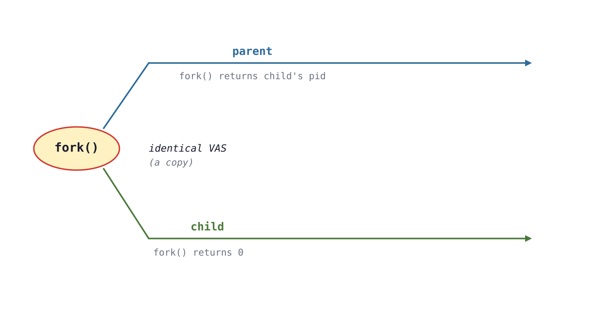</p> --- ### the process lifecycle <scb>fork()</scb> → _one_ process becomes **two** we are calling <scb>fork()</scb> mainly for its **side effects** --- ### the process lifecycle <scb>fork()</scb> → _one_ process becomes **two** we are calling <scb>fork()</scb> mainly for its **side effects** → creation of a **new process** (not return value) --- → creation of a **new process** (not return value) - the return value is important - identify parent/child --- ### the process lifecycle **child** calls <scb>exec()</scb> → replaces itself with a new program <p>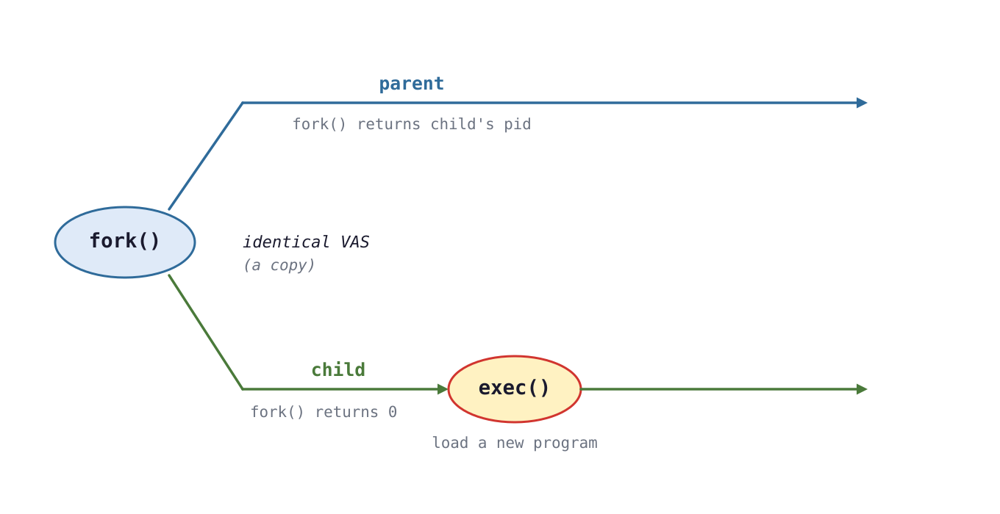</p> --- ### the process lifecycle **child** calls <scb>exec()</scb> → replaces itself with a new program **any** process can call <scb>exec()</scb> --- ### the process lifecycle **parent** calls <scb>wait()</scb> → **blocks** until child calls <scb>exit(ret)</scb> <p>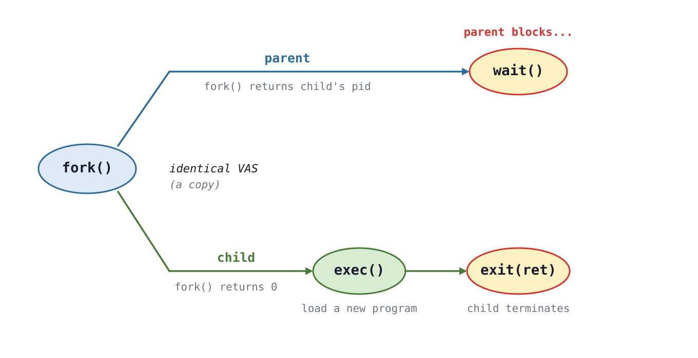</p> --- ### the process lifecycle <scb>ret</scb> passed **up** to parent → parent resumes <p>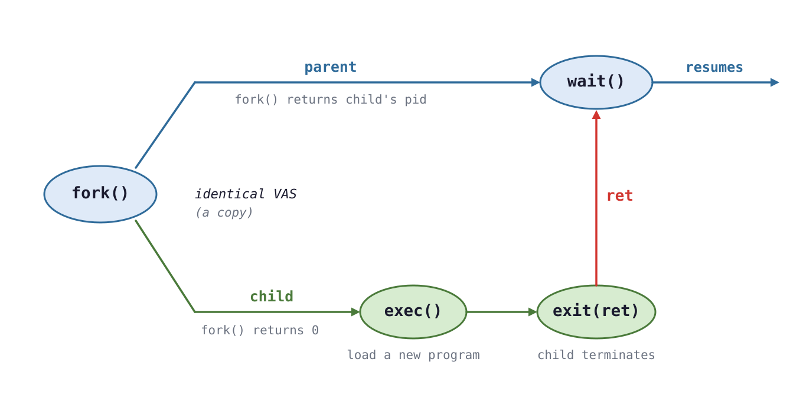</p> --- ### the process lifecycle <scb>ret</scb> passed **up** to parent → parent resumes <scb>exit</scb> + <scb>wait</scb> → a (tiny) form of **communication** (exit value) --- ### a simple example | <scb>ls</scb> in the shell --- ### a simple example | <scb>ls</scb> in the shell <p>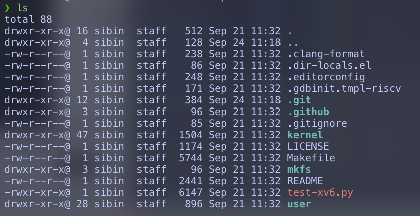</p> --- ### a simple example | <scb>ls</scb> in the shell <div class="multicolumn" style="display: grid; grid-template-columns: 40% 60%; gap: 20px; align-items: center;"> <div> </div> <div> 1. shell <scb>fork()</scb>+<scb>exec()</scb> a new process </div> </div> --- ### a simple example | <scb>ls</scb> in the shell <div class="multicolumn" style="display: grid; grid-template-columns: 40% 60%; gap: 20px; align-items: center;"> <div> </div> <div> 1. shell <scb>fork()</scb>+<scb>exec()</scb> a new process 2. new process → runs <scb>ls</scb> </div> </div> --- ### a simple example | <scb>ls</scb> in the shell <div class="multicolumn" style="display: grid; grid-template-columns: 40% 60%; gap: 20px; align-items: center;"> <div> </div> <div> 1. shell <scb>fork()</scb>+<scb>exec()</scb> a new process 2. new process → runs <scb>ls</scb> 3. parent (shell) **waits** for child to be done </div> </div> --- ## <scb>fork()</scb> | **returns twice** --- ### <scb>fork()</scb> | **returns twice** a very **strange** function... --- ### <scb>fork()</scb> | **returns twice** a very **strange** function... - called **once** --- ### <scb>fork()</scb> | **returns twice** a very **strange** function... - called **once** - returns **twice** → in two _different_ processes! --- ### <scb>fork()</scb> | **returns twice** - two **indentical** processes - except for **pids** and fork's **return value** --- ### <scb>fork()</scb> | **returns twice** - two **indentical** processes - except for **pids** and fork's **return value** | returns in | value | |---|---| | **parent** | child's pid (<scb>> 0</scb>) | --- ### <scb>fork()</scb> | **returns twice** - two **indentical** processes - except for **pids** and fork's **return value** | returns in | value | |---|---| | **parent** | child's pid (<scb>> 0</scb>) | | **child** | <scb>0</scb> | --- ### <scb>fork()</scb> | **returns twice** - two **indentical** processes - except for **pids** and fork's **return value** | returns in | value | |---|---| | **parent** | child's pid (<scb>> 0</scb>) | | **child** | <scb>0</scb> | | error | <scb>-1</scb> (no child created) | || --- ### <scb>fork()</scb> | **returns twice** one process, about to call <scb>fork()</scb> <p>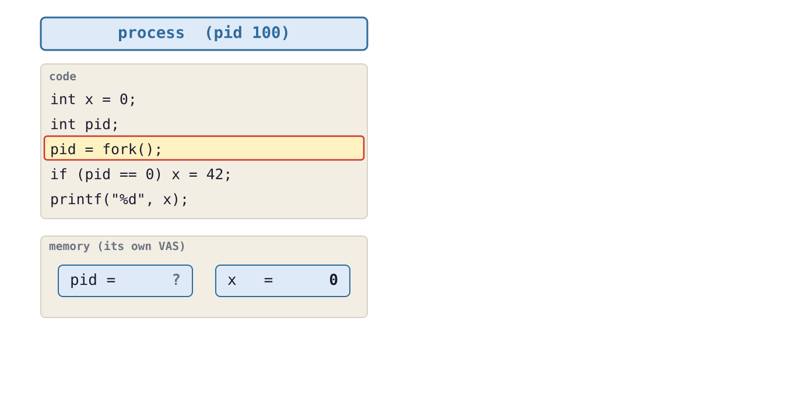</p> --- ### <scb>fork()</scb> | **returns twice** same code, same memory contents → **only** return value differs <p>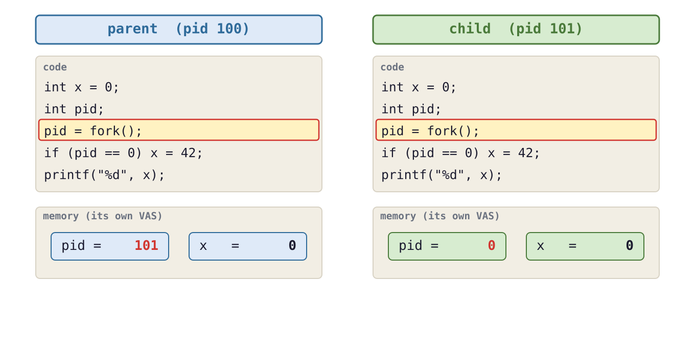</p> --- ### <scb>fork()</scb> | **returns twice** child writes <scb>x = 42</scb> → parent's <scb>x</scb> still <scb>0</scb> (**separate copies**) <p>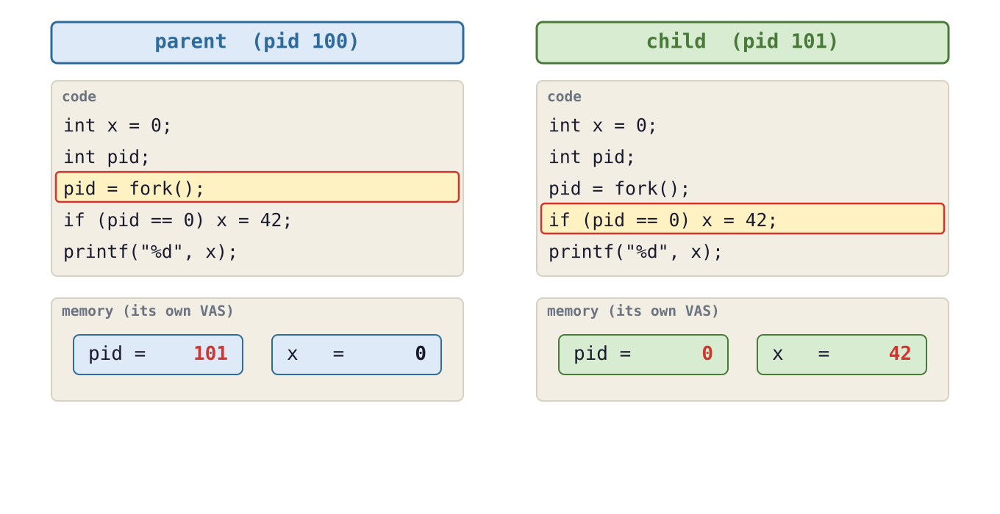</p> --- return value → the **only** way to tell... <center><div class="center" data-id="box" style="height: 75px; width: 785px; background: orange;"> <b>am I the parent or the child?</b> </div></center> --- let's look at <scb>xv6</scb>... <scb>kernel/proc.c</scb> --- ### <scb>xv6</scb> | <scb>kfork()</scb> ```C int kfork(void) { ... // Allocate process. if ((np = allocproc()) == 0) { return -1; } // Copy user memory from parent to child. if (uvmcopy(p->pagetable, np->pagetable, p->sz) < 0) { ... } np->sz = p->sz; // copy saved user registers. *(np->trapframe) = *(p->trapframe); // Cause fork to return 0 in the child. np->trapframe->a0 = 0; // increment reference counts on open file descriptors. for (i = 0; i < NOFILE; i++) if (p->ofile[i]) np->ofile[i] = filedup(p->ofile[i]); ... np->state = RUNNABLE; ... return pid; } ``` --- ### <scb>xv6</scb> | <scb>kfork()</scb> ```C [6|11|17|20|23-25|27|29] int kfork(void) { ... // Allocate process. if ((np = allocproc()) == 0) { return -1; } // Copy user memory from parent to child. if (uvmcopy(p->pagetable, np->pagetable, p->sz) < 0) { ... } np->sz = p->sz; // copy saved user registers. *(np->trapframe) = *(p->trapframe); // Cause fork to return 0 in the child. np->trapframe->a0 = 0; // increment reference counts on open file descriptors. for (i = 0; i < NOFILE; i++) if (p->ofile[i]) np->ofile[i] = filedup(p->ofile[i]); ... np->state = RUNNABLE; ... return pid; } ``` Note: - uvmcopy = copy ALL of the parent's user memory, page by page. - a0 is the RISC-V return-value register -> the child sees 0; the parent gets pid. --- ### <scb>xv6</scb> | <scb>kfork()</scb> | step | what it does | |---|---| | <scb>allocproc()</scb> | new <scb>struct proc</scb> (PCB) + pid | --- ### <scb>xv6</scb> | <scb>kfork()</scb> | step | what it does | |---|---| | <scb>allocproc()</scb> | new <scb>struct proc</scb> (PCB) + pid | | <scb>uvmcopy()</scb> | **copy** all user memory | --- ### <scb>xv6</scb> | <scb>kfork()</scb> | step | what it does | |---|---| | <scb>allocproc()</scb> | new <scb>struct proc</scb> (PCB) + pid | | <scb>uvmcopy()</scb> | **copy** all user memory | | copy <scb>trapframe</scb> | same user registers → same place in the code | --- ### <scb>xv6</scb> | <scb>kfork()</scb> | step | what it does | |---|---| | <scb>allocproc()</scb> | new <scb>struct proc</scb> (PCB) + pid | | <scb>uvmcopy()</scb> | **copy** all user memory | | copy <scb>trapframe</scb> | same user registers → same place in the code | | <scb>a0 = 0</scb> | child's **return value** is 0 | --- ### <scb>xv6</scb> | <scb>kfork()</scb> | step | what it does | |---|---| | <scb>allocproc()</scb> | new <scb>struct proc</scb> (PCB) + pid | | <scb>uvmcopy()</scb> | **copy** all user memory | | copy <scb>trapframe</scb> | same user registers → same place in the code | | <scb>a0 = 0</scb> | child's **return value** is 0 | | <scb>filedup()</scb> | child **shares** the open files | --- ### <scb>xv6</scb> | <scb>kfork()</scb> | step | what it does | |---|---| | <scb>allocproc()</scb> | new <scb>struct proc</scb> (PCB) + pid | | <scb>uvmcopy()</scb> | **copy** all user memory | | copy <scb>trapframe</scb> | same user registers → same place in the code | | <scb>a0 = 0</scb> | child's **return value** is 0 | | <scb>filedup()</scb> | child **shares** the open files | | <scb>RUNNABLE</scb> | child is ready → parent returns child's pid | || --- ### <scb>fork()</scb> | **not aged well** - hard to use → full of nuance and corner cases --- ### <scb>fork()</scb> | **not aged well** - hard to use → full of nuance and corner cases - see: _"A fork() in the road"_ (Baumann et al., HotOS 2019) --- ### <scb>fork()</scb> | **not aged well** - hard to use → full of nuance and corner cases - see: _"A fork() in the road"_ (Baumann et al., HotOS 2019) - but it **is** the core UNIX API... and what **xv6** uses <br> <center><div class="center" data-id="box" style="height: 75px; width: 560px; background: orange;"> <b>we're stuck with it!</b> </div></center> --- ## <scb>fork</scb> + <scb>exec</scb> + <scb>wait</scb> --- let's look at `code` example... <scb>forktest.c</scb> --- ```C int pid; pid = fork(); if (pid == 0) { // child execlp("/bin/ret42", ...); // never get here } else if (pid > 0) { // parent int retval, retpid; retpid = wait(&retval); assert(retpid == pid); printf("%d\n", retval); } else { // error ...process error... } ``` --- ```C [2|3-5|6-10|8|10|11-12] int pid; pid = fork(); if (pid == 0) { // child execlp("/bin/ret42", ...); // never get here } else if (pid > 0) { // parent int retval, retpid; retpid = wait(&retval); assert(retpid == pid); printf("%d\n", retval); } else { // error ...process error... } ``` --- ```C int pid; pid = fork(); if (pid == 0) { // child execlp("/bin/ret42", ...); // never get here } else if (pid > 0) { // parent int retval, retpid; retpid = wait(&retval); assert(retpid == pid); printf("%d\n", retval); } else { // error ...process error... } ``` --- ### <scb>forktest</scb> <scb>pid = fork()</scb> → parent gets <scb>101</scb>, child gets <scb>0</scb> <p>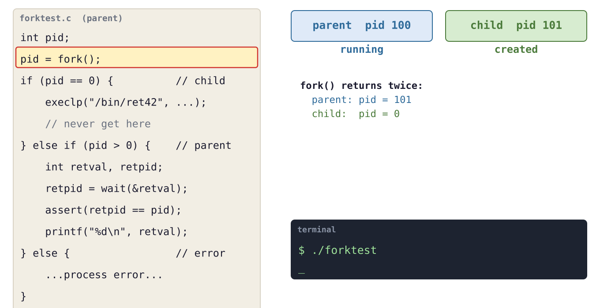</p> --- ### <scb>forktest</scb> child calls <scb>execlp()</scb> → its VAS is **replaced** by <scb>/bin/ret42</scb> <p>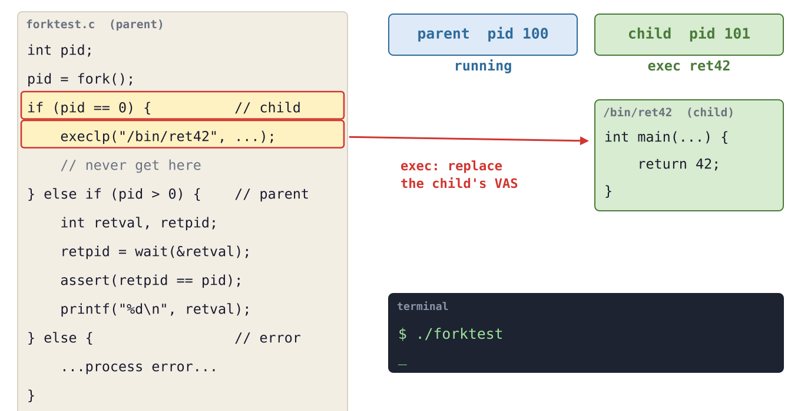</p> --- ### <scb>forktest</scb> child calls <scb>execlp()</scb> → its VAS is **replaced** by <scb>/bin/ret42</scb> "_never get here_" - if <scb>exec</scb> succeeds - this code **no longer exists** in child --- ### <scb>forktest</scb> parent calls <scb>wait()</scb> → **blocked** until the child exits <p>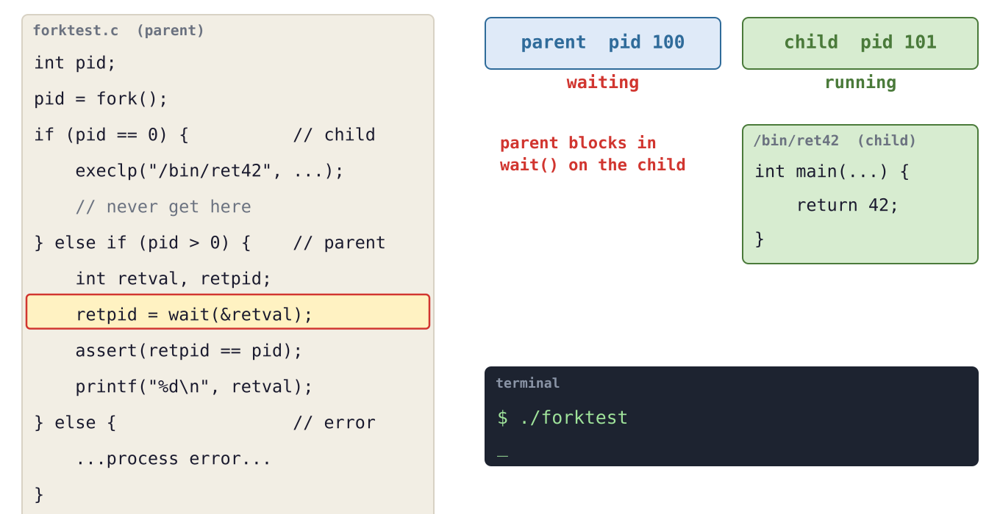</p> --- ### <scb>forktest</scb> parent calls <scb>wait()</scb> → **blocked** until the child exits recall process states → <scb>running</scb> → <scb>waiting</scb> --- ### <scb>forktest</scb> child returns <scb>42</scb> → pops out of parent's <scb>wait()</scb> as <scb>retval</scb> <p>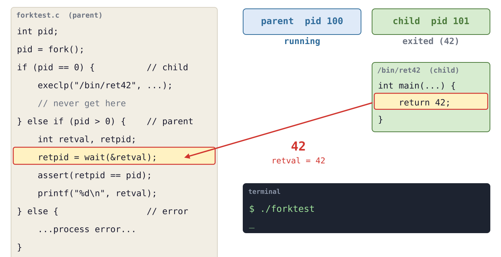</p> --- ### <scb>wait()</scb> | **linux vs xv6** | | linux (POSIX) | xv6 | |---|---|---| | returns | pid of the exited child | pid of the exited child | --- ### <scb>wait()</scb> | **linux vs xv6** | | linux (POSIX) | xv6 | |---|---|---| | returns | pid of the exited child | pid of the exited child | | <scb>status</scb> | packed word → <scb>WEXITSTATUS(status)</scb> = 42 | the exit value itself = 42 | || Note: - the assert(retpid == pid) checks wait's return value. --- ### <scb>forktest</scb> what if the child **never** exits? <p>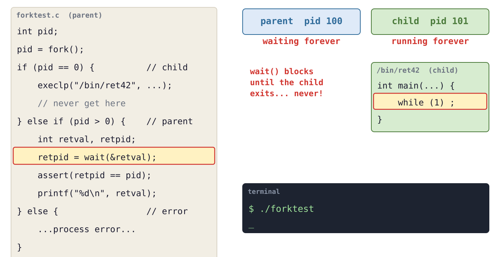</p> --- ### <scb>forktest</scb> what if the child **never** exits? <center><div class="center" data-id="box" style="height: 75px; width: 585px; background: orange;"> <b>parent waits forever!</b> </div></center> --- ### <scb>forktest</scb> parent prints the child's return value <p>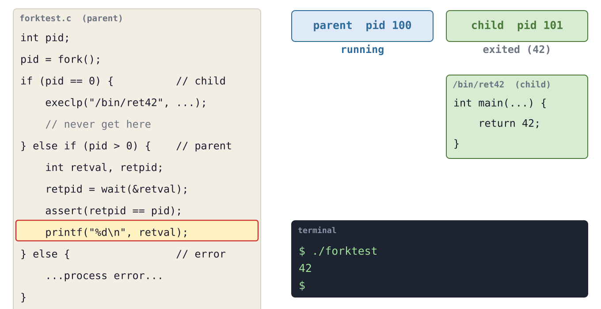</p> --- --- ## process **hierarchy** --- ### process creation | <scb>fork()</scb> - a **parent** process may <scb>fork()</scb> a **child** process --- ### process creation | <scb>fork()</scb> - a **parent** process may <scb>fork()</scb> a **child** process - parent can <scb>wait()</scb> → stop until the child <scb>exit()</scb>s --- ### process creation | <scb>fork()</scb> - a **parent** process may <scb>fork()</scb> a **child** process - parent can <scb>wait()</scb> → stop until the child <scb>exit()</scb>s - parent can <scb>kill()</scb> its children (!) - sends a **signal** to the child --- ### process creation | <scb>fork()</scb> - a **parent** process may <scb>fork()</scb> a **child** process - parent can <scb>wait()</scb> → stop until the child <scb>exit()</scb>s - parent can <scb>kill()</scb> its children (!) - sends a **signal** to the child - processes form a **hierarchy**... --- ### process hierarchy | **questions** 1. which is the **first** process? --- ### process hierarchy | **questions** 1. which is the **first** process? 2. where does a **shell** fit in? --- ### process hierarchy | **questions** 1. which is the **first** process? 2. where does a **shell** fit in? 3. when does a shell <scb>wait()</scb>? when does it **not**? --- ### process hierarchy | **questions** 1. which is the **first** process? 2. where does a **shell** fit in? 3. when does a shell <scb>wait()</scb>? when does it **not**? 4. what does <scb>ctrl-C</scb> in a shell do? --- if every process is <scb>fork()</scb>ed from another... where does it all **start**? --- ### process hierarchy | **the first process** <p>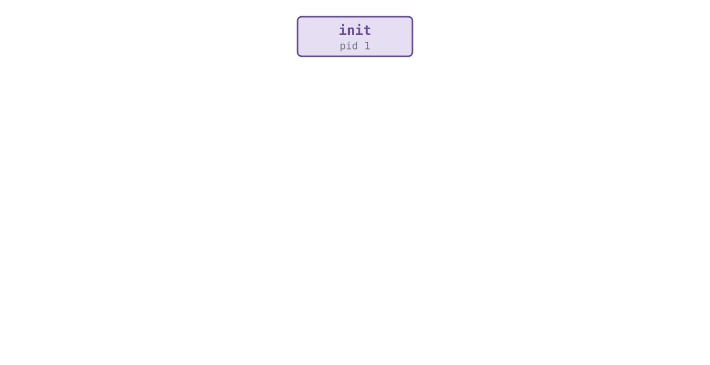</p> --- ### process hierarchy | **the first process** <scb>init</scb> → kernel starts **exactly one** process (<scb>pid 1</scb>) → everything else is forked from it <p>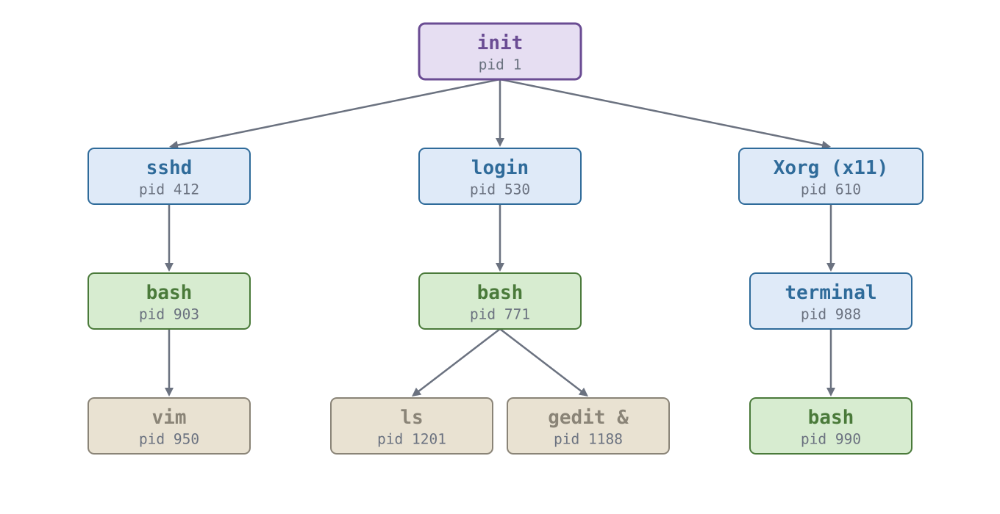</p> --- ### process hierarchy | **the first process** - modern Linux → <scb>systemd</scb> is the init process --- ### process hierarchy | **the first process** - modern Linux → <scb>systemd</scb> is the init process - many variants exist --- ### process hierarchy | **the first process** - modern Linux → <scb>systemd</scb> is the init process - many variants exist - try <scb>pstree</scb> on a Linux machine → see your own tree --- let's look at <scb>xv6</scb>... <scb>user/init.c</scb> --- ### <scb>xv6</scb> | <scb>init</scb> ```C for (;;) { printf("init: starting sh\n"); pid = fork(); ... if (pid == 0) { exec("sh", argv); printf("init: exec sh failed\n"); exit(1); } for (;;) { // this call to wait() returns if the shell exits, // or if a parentless process exits. wpid = wait((int *)0); if (wpid == pid) { // the shell exited; restart it. break; } else if (wpid < 0) { ... } else { // it was a parentless process; do nothing. } } } ``` --- ### <scb>xv6</scb> | <scb>init</scb> ```C [3|5-8|14|15-17|20-21] for (;;) { printf("init: starting sh\n"); pid = fork(); ... if (pid == 0) { exec("sh", argv); printf("init: exec sh failed\n"); exit(1); } for (;;) { // this call to wait() returns if the shell exits, // or if a parentless process exits. wpid = wait((int *)0); if (wpid == pid) { // the shell exited; restart it. break; } else if (wpid < 0) { ... } else { // it was a parentless process; do nothing. } } } ``` --- <scb>init</scb> forks + execs the **shell**... and _restarts_ it if it dies <br> <center><div class="center" data-id="box" style="height: 75px; width: 535px; background: orange;"> <b>process management!</b> </div></center> --- ## the **shell** --- ### the shell | **fork + exec + wait** - the shell → one of the main **users** of the process API --- ### the shell | **fork + exec + wait** - the shell → one of the main **users** of the process API - every command you type → <scb>fork()</scb> + <scb>exec()</scb> --- ### the shell | **foreground** shell <scb>wait()</scb>s → prompt only returns when the child exits <p>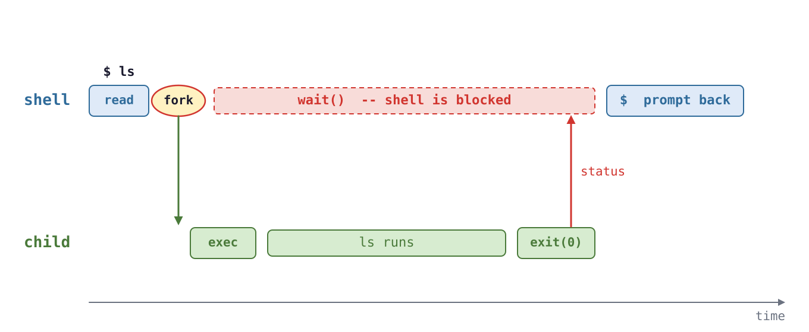</p> --- ### the shell | **background** a trailing <scb>&</scb> → shell does **not** wait → both run **concurrently** <p>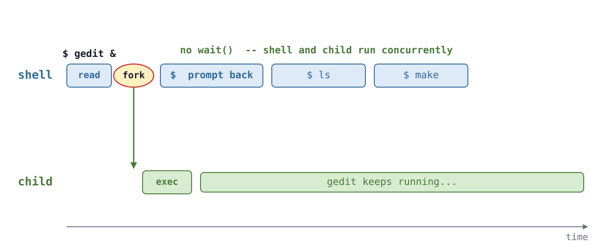</p> --- ### the shell | **background** try it! - run <scb>gedit</scb> → no prompt until you close it --- ### the shell | **background** try it! - run <scb>gedit</scb> → no prompt until you close it - run <scb>gedit &</scb> → prompt right away --- let's look at <scb>xv6</scb>... <scb>user/sh.c</scb> --- ### <scb>xv6</scb> | <scb>sh</scb> ```C // Read and run input commands. while (getcmd(buf, sizeof(buf)) >= 0) { ... if (cmd[0] == 'c' && cmd[1] == 'd' && cmd[2] == ' ') { // Chdir must be called by the parent, not the child. ... if (chdir(cmd + 3) < 0) fprintf(2, "cannot cd %s\n", cmd + 3); } else { if (fork1() == 0) runcmd(parsecmd(cmd)); wait(0); } } ``` --- ### <scb>xv6</scb> | <scb>sh</scb> ```C [2|10-11|12|4-5|7] // Read and run input commands. while (getcmd(buf, sizeof(buf)) >= 0) { ... if (cmd[0] == 'c' && cmd[1] == 'd' && cmd[2] == ' ') { // Chdir must be called by the parent, not the child. ... if (chdir(cmd + 3) < 0) fprintf(2, "cannot cd %s\n", cmd + 3); } else { if (fork1() == 0) runcmd(parsecmd(cmd)); wait(0); } } ``` --- why must <scb>cd</scb> run in the **parent**? --- why must <scb>cd</scb> run in the **parent**? - the current directory → part of each **process'** state --- why must <scb>cd</scb> run in the **parent**? - the current directory → part of each **process'** state - a child's <scb>chdir()</scb> → changes only the **child**... which then exits! <center><div class="center" data-id="box" style="height: 75px; width: 485px; background: orange;"> <b>isolation, again!</b> </div></center> --- ### <scb>xv6</scb> | **background** (<scb>&</scb>) but <scb>sh</scb> **always** calls <scb>wait(0)</scb>... so how does <scb>&</scb> work? --- ### <scb>xv6</scb> | **background** (<scb>&</scb>) ```C [3|4|7] case BACK: bcmd = (struct backcmd *)cmd; if (fork1() == 0) runcmd(bcmd->cmd); break; ... exit(0); ``` --- ### <scb>xv6</scb> | **background** (<scb>&</scb>) - the shell's child forks a **grandchild** to run the command --- ### <scb>xv6</scb> | **background** (<scb>&</scb>) - the shell's child forks a **grandchild** to run the command - the child exits **immediately** → shell's <scb>wait(0)</scb> returns right away --- ### <scb>xv6</scb> | **background** (<scb>&</scb>) - the shell's child forks a **grandchild** to run the command - the child exits **immediately** → shell's <scb>wait(0)</scb> returns right away - the grandchild keeps running → an **orphan** (adopted by <scb>init</scb>) --- ### the shell | <scb>ctrl-C</scb> a **signal** is sent to the foreground child → it terminates → <scb>wait()</scb> returns <p>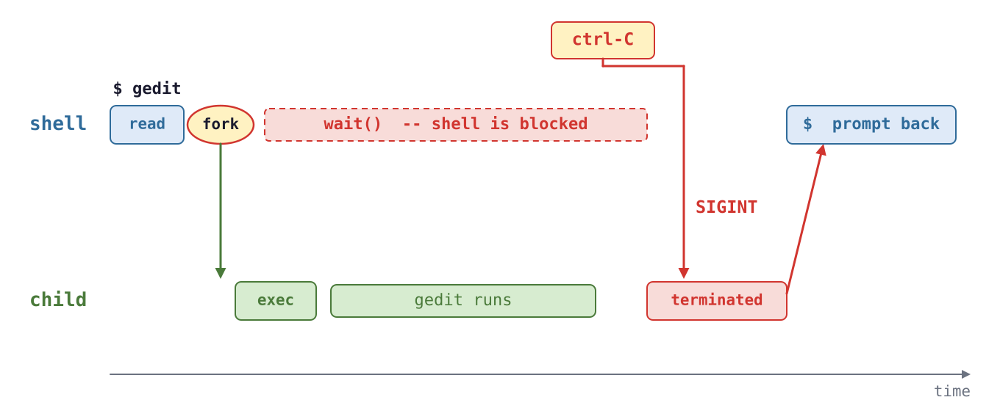</p> --- ### the shell | <scb>ctrl-C</scb> | action | signal sent | default | |---|---|---| | <scb>ctrl-C</scb> | <scb>SIGINT</scb> → foreground job | terminate | --- ### the shell | <scb>ctrl-C</scb> | action | signal sent | default | |---|---|---| | <scb>ctrl-C</scb> | <scb>SIGINT</scb> → foreground job | terminate | | <scb>kill <pid></scb> | <scb>SIGTERM</scb> | terminate | || Note: - the original slides / lecture say SIGTERM for ctrl-C; it is actually SIGINT. --- ## <scb>fork()</scb> | **copying the address space** --- ### <scb>fork()</scb> | **copying the address space** - <scb>fork()</scb> creates a **copy** of the parent's address space --- ### <scb>fork()</scb> | **copying the address space** - <scb>fork()</scb> creates a **copy** of the parent's address space - quite literally a <sc>memcpy</sc> of **all** memory (<scb>uvmcopy</scb> in xv6) --- ### <scb>fork()</scb> | **copying the address space** - <scb>fork()</scb> creates a **copy** of the parent's address space - quite literally a <sc>memcpy</sc> of **all** memory (<scb>uvmcopy</scb> in xv6) - copying all memory → **expensive**! --- ### <scb>fork()</scb> | **and then...** - very often the intention → **execute a new program** --- ### <scb>fork()</scb> | **and then...** - very often the intention → **execute a new program** - <scb>exec() / execve() / execlp()</scb> → load program from disk into **current** process --- ### <scb>fork()</scb> | **and then...** - very often the intention → **execute a new program** - <scb>exec() / execve() / execlp()</scb> → load program from disk into **current** process - _the_ way to run a new program --- why is copying **slow**? --- why is copying **slow**? - **caches** → the only thing that makes modern CPUs feel fast --- why is copying **slow**? - **caches** → the only thing that makes modern CPUs feel fast - without them → roughly <scb>~300x</scb> slower! --- ### why is copying **slow**? cache holds your **hot** data (working set) <p>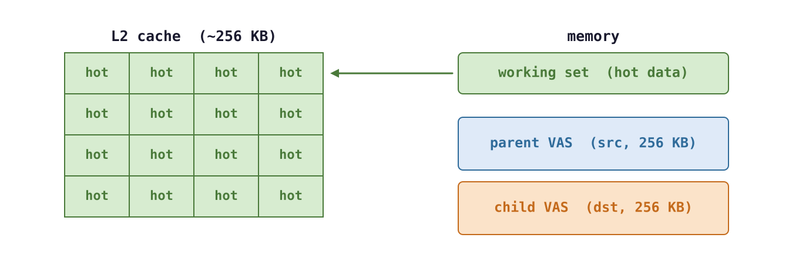</p> --- ### why is copying **slow**? copy <scb>256 KB</scb> → touch <scb>512 KB</scb> (src + dst) → ~ size of an L2 cache <p>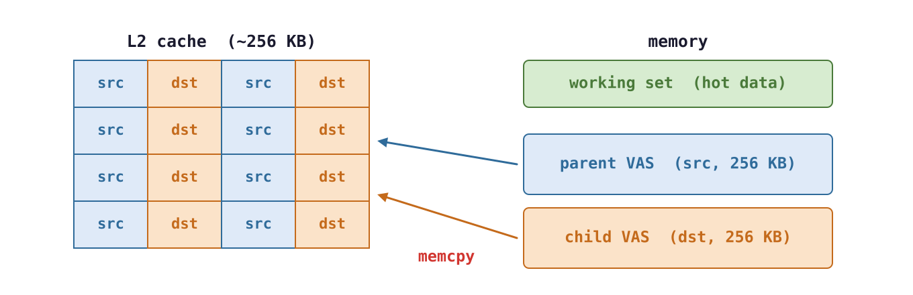</p> --- ### why is copying **slow**? - the **copy** itself is slow --- ### why is copying **slow**? - the **copy** itself is slow - hot data **evicted** → slow _after_ the fork too --- ### why is copying **slow**? - the **copy** itself is slow - hot data **evicted** → slow _after_ the fork too - you can _feel_ how slow fork is on xv6 --- ### <scb>fork()</scb> then <scb>exec()</scb> parent's VAS → **all** of it <p>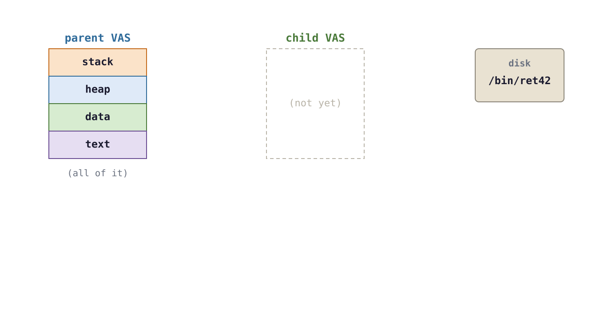</p> --- ### <scb>fork()</scb> then <scb>exec()</scb> <scb>fork()</scb> → _"copy the whole address space please, thanks!"_ <p>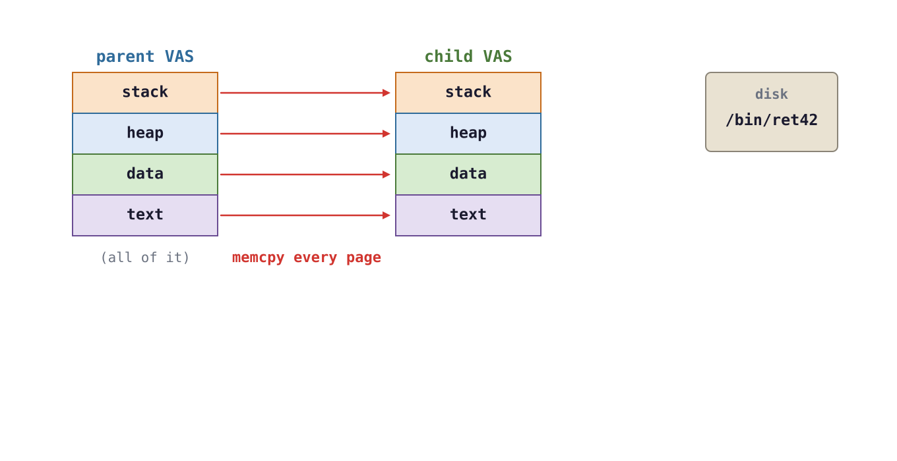</p> --- ### <scb>fork()</scb> then <scb>exec()</scb> <scb>exec()</scb> → _"now kill the whole address space and replace it, thanks!"_ <p>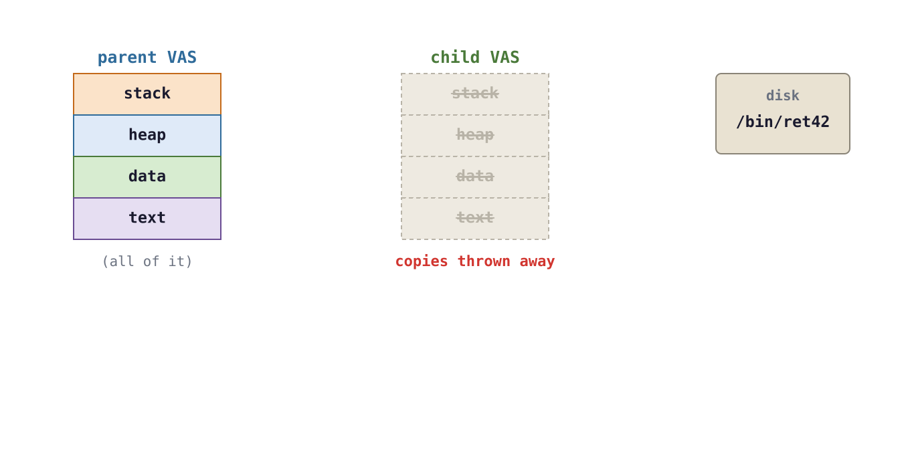</p> --- ### <scb>fork()</scb> then <scb>exec()</scb> load the new program from disk <p>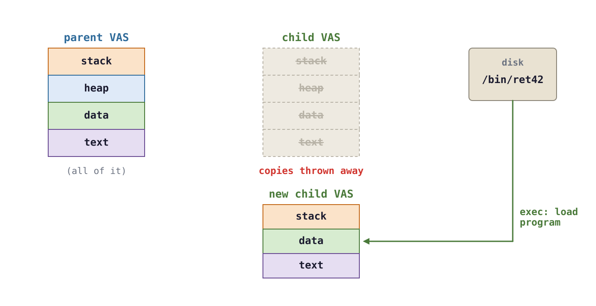</p> --- ### <scb>fork()</scb> then <scb>exec()</scb> load the new program from disk <center><div class="center" data-id="box" style="height: 75px; width: 860px; background: orange;"> <b>all that copying... for nothing!</b> </div></center> --- ### <scb>fork()</scb> then <scb>exec()</scb> - in a shell → <scb>fork</scb> is almost **always** followed by <scb>exec</scb> --- ### <scb>fork()</scb> then <scb>exec()</scb> - in a shell → <scb>fork</scb> is almost **always** followed by <scb>exec</scb> - other systems (Windows, research OSes like Composite) → saner **spawn**-style APIs --- ## so why copy **all** memory? --- ### so why copy **all** memory? don't complain → **engineer** around it! - <scb>vfork()</scb> → stop parent's execution until child <scb>exec()</scb>s --- ### so why copy **all** memory? don't complain → **engineer** around it! - <scb>vfork()</scb> → stop parent's execution until child <scb>exec()</scb>s - **COW** → copy-on-write memory sharing --- ### <scb>vfork()</scb> | **don't copy at all** child runs **inside** parent's VAS → parent is **suspended** <p>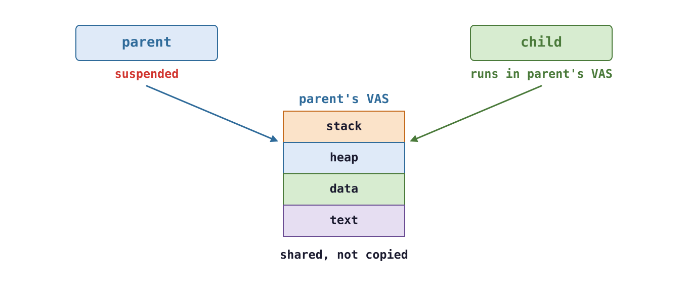</p> --- ### <scb>vfork()</scb> | **don't copy at all** child calls <scb>exec()</scb> → gets its **own** new VAS <p>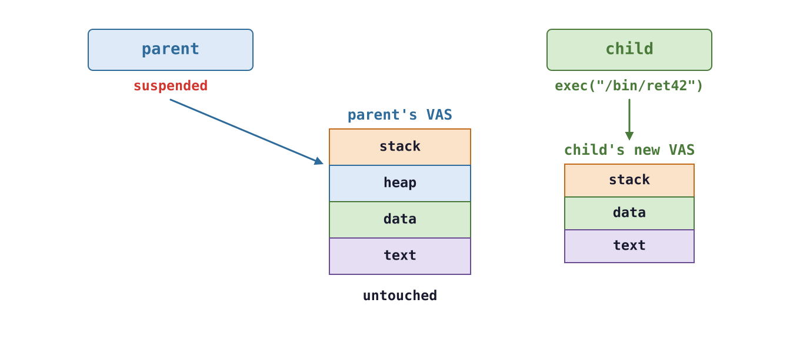</p> --- ### <scb>vfork()</scb> | **don't copy at all** ...and **only then** does the parent resume <p>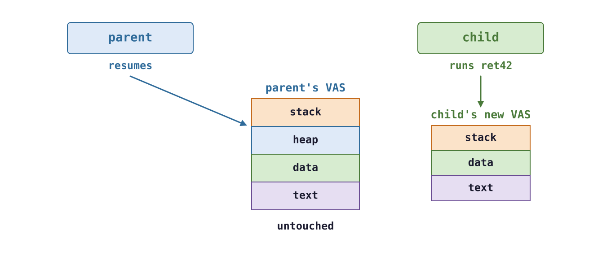</p> --- ### <scb>vfork()</scb> | **a HACK** child can modify parent's memory → even its **stack frames**! <p>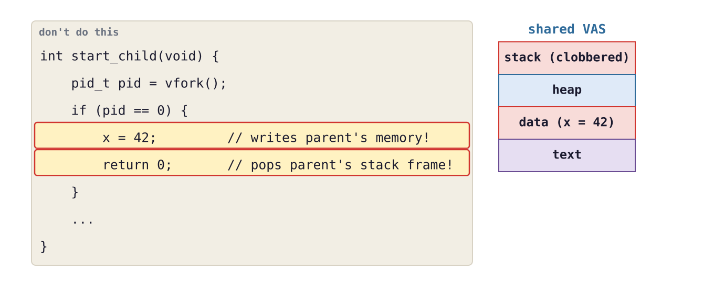</p> --- ### <scb>vfork()</scb> | **a HACK** - only safe use → <scb>vfork()</scb> **immediately** followed by <scb>exec()</scb> or <scb>_exit()</scb> --- ### <scb>vfork()</scb> | **a HACK** - only safe use → <scb>vfork()</scb> **immediately** followed by <scb>exec()</scb> or <scb>_exit()</scb> - improves performance by making a hard API **even harder** to use <center><div class="center" data-id="box" style="height: 75px; width: 200px; background: orange;"> <b>HACK</b> </div></center> --- ### copy-on-write (COW) - use **hardware** virtual memory support → pages can be marked **read-only** --- ### copy-on-write (COW) - use **hardware** virtual memory support → pages can be marked **read-only** - recall: <scb>/proc/<pid>/maps</scb> showed code as <scb>r-xp</scb> (<scb>p</scb> = private, copy-on-write!) --- ### copy-on-write (COW) - use **hardware** virtual memory support → pages can be marked **read-only** - recall: <scb>/proc/<pid>/maps</scb> showed code as <scb>r-xp</scb> (<scb>p</scb> = private, copy-on-write!) - page tables in detail → _later in the course_ --- ### copy-on-write (COW) before <scb>fork()</scb> → parent's pages are read-write <p>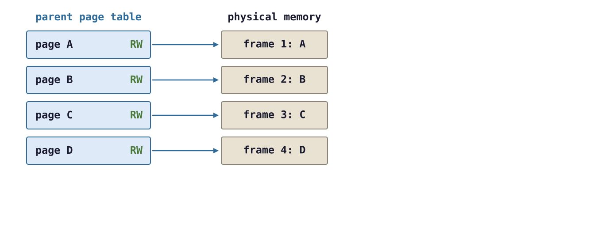</p> --- ### copy-on-write (COW) after <scb>fork()</scb> → **share** every frame, mark **all** read-only <p>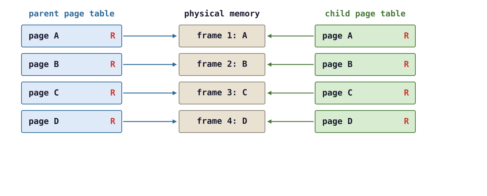</p> --- ### copy-on-write (COW) after <scb>fork()</scb> → **share** every frame, mark **all** read-only <center><div class="center" data-id="box" style="height: 75px; width: 335px; background: orange;"> <b>no copying!</b> </div></center> --- ### copy-on-write (COW) child **stores** to page B → page fault → trap into kernel <p>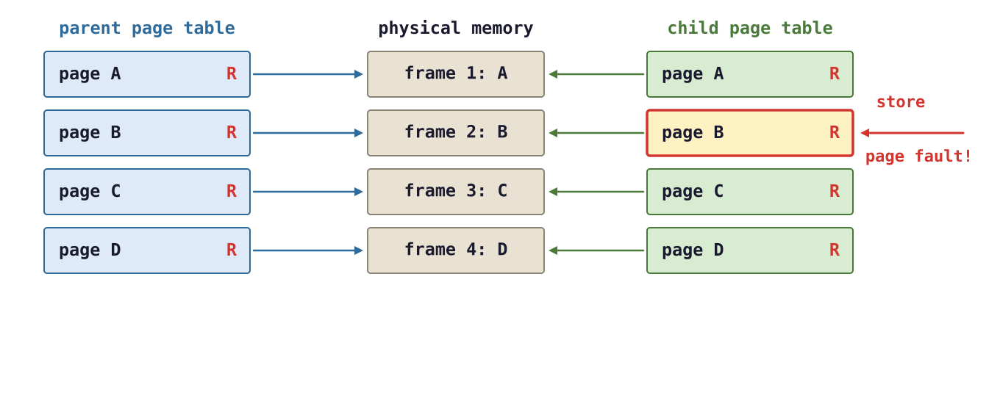</p> --- ### copy-on-write (COW) kernel copies **only** page B, maps both read-write, retries the store <p>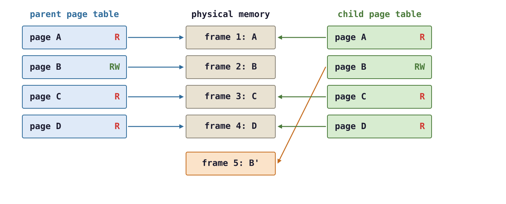</p> --- ### copy-on-write (COW) - other pages stay **shared** (read-only) until someone writes --- ### copy-on-write (COW) - other pages stay **shared** (read-only) until someone writes - child <scb>exec()</scb>s right away → almost **nothing** is ever copied --- ### copy-on-write (COW) | **used everywhere** - extra cost → handling faults, delayed copies --- ### copy-on-write (COW) | **used everywhere** - extra cost → handling faults, delayed copies - but we copy **only** what _has_ to be copied --- ### copy-on-write (COW) | **used everywhere** - extra cost → handling faults, delayed copies - but we copy **only** what _has_ to be copied - in practice → only a **small** fraction of a VAS is ever written <center><div class="center" data-id="box" style="height: 75px; width: 1160px; background: orange;"> <b>brilliant engineering → used everywhere</b> </div></center> --- ...to paper over a fundamentally **awkward** API (<scb>fork</scb> + <scb>exec</scb>) --- ## process termination | <scb>exit()</scb> --- ### process termination | <scb>exit()</scb> - <scb>exit(ret)</scb> → **the** way for a process to _intentionally_ terminate itself --- ### process termination | <scb>exit()</scb> - <scb>exit(ret)</scb> → **the** way for a process to _intentionally_ terminate itself - release the process' **resources** back to the system - memory / VAS, kernel stack, open files, PCB... --- ### process termination | <scb>exit()</scb> - <scb>exit(ret)</scb> → **the** way for a process to _intentionally_ terminate itself - release the process' **resources** back to the system - memory / VAS, kernel stack, open files, PCB... - discontinue execution --- ### process termination | <scb>exit()</scb> - <scb>exit(ret)</scb> → **the** way for a process to _intentionally_ terminate itself - release the process' **resources** back to the system - memory / VAS, kernel stack, open files, PCB... - discontinue execution - takes an argument → the child's **return value** - same as returning an integer from <scb>main</scb> --- ### <scb>exit()</scb> | **main's return** returning an integer from <scb>main</scb>... <p>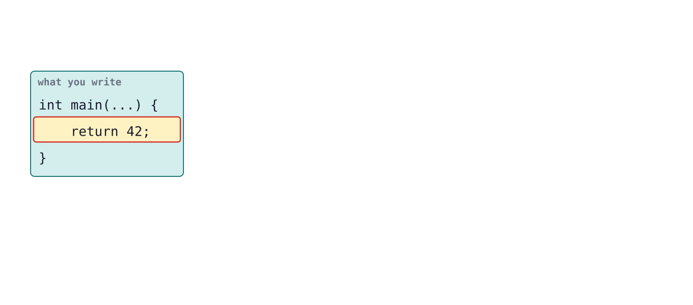</p> --- ### <scb>exit()</scb> | **main's return** ...is the same, in every way, as calling <scb>exit()</scb> with it <p>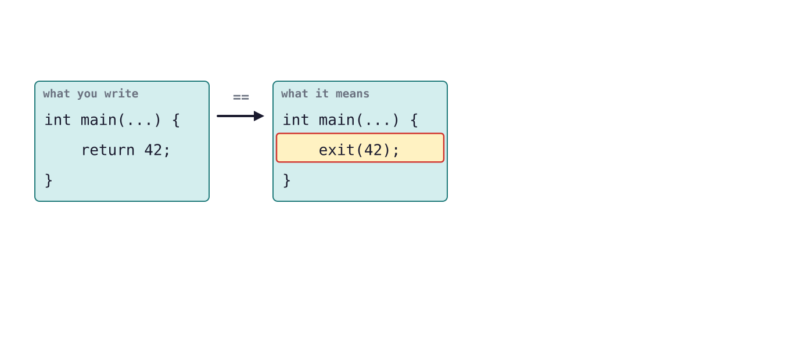</p> --- ### <scb>exit()</scb> | **main's return** programs **don't start** in <scb>main</scb> → <scb>_start</scb> calls <scb>main</scb>, then <scb>exit()</scb>s <p>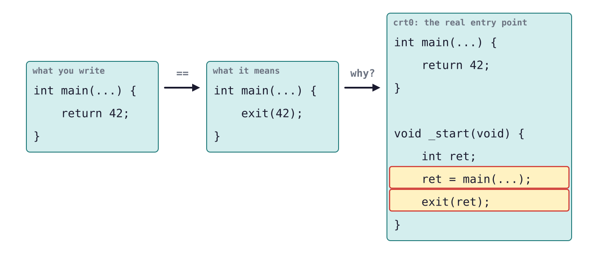</p> --- ### <scb>exit()</scb> | **main's return** - <scb>_start</scb> → usually an assembly routine (<scb>crt0</scb>) --- ### <scb>exit()</scb> | **main's return** - <scb>_start</scb> → usually an assembly routine (<scb>crt0</scb>) - shown here as C <br> <center><div class="center" data-id="box" style="height: 75px; width: 1360px; background: orange;"> <b>xv6: no _start plumbing → call exit() yourself!</b> </div></center> --- the child exits **before** the parent calls <scb>wait()</scb>... --- the child exits **before** the parent calls <scb>wait()</scb>... - where do we keep <scb>42</scb> until the parent asks for it? --- the child exits **before** the parent calls <scb>wait()</scb>... - where do we keep <scb>42</scb> until the parent asks for it? - free **all** of the child's resources → value is **lost** --- the child exits **before** the parent calls <scb>wait()</scb>... - where do we keep <scb>42</scb> until the parent asks for it? - free **all** of the child's resources → value is **lost** - store it in the parent? → what if it has **N** children? --- ### <scb>exit()</scb> | **zombies** child is running → parent is busy, **not** waiting <p>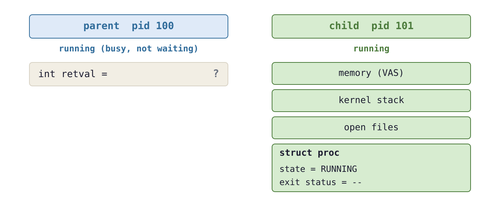</p> --- ### <scb>exit()</scb> | **zombies** child exits → most resources freed, but <scb>struct proc</scb> **stays** → a **zombie** <p>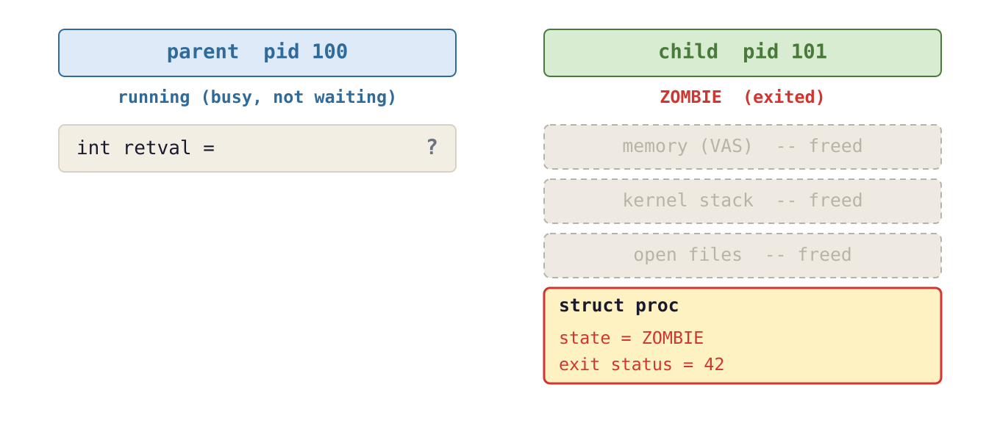</p> --- ### <scb>exit()</scb> | **zombies** parent calls <scb>wait()</scb> → gets <scb>42</scb> → zombie is **reaped** <p>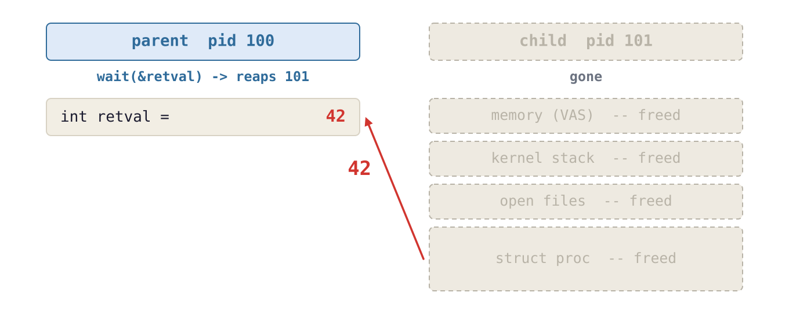</p> --- let's look at <scb>xv6</scb>... <scb>kexit()</scb> --- ### <scb>xv6</scb> | <scb>kexit()</scb> ```C void kexit(int status) { ... // Close all open files. for (int fd = 0; fd < NOFILE; fd++) { ... fileclose(f); } ... // Give any children to init. reparent(p); // Parent might be sleeping in wait(). wakeup(p->parent); ... p->xstate = status; p->state = ZOMBIE; ... // Jump into the scheduler, never to return. sched(); panic("zombie exit"); } ``` --- ### <scb>xv6</scb> | <scb>kexit()</scb> ```C [6-8|12|15|17|18|21|22] void kexit(int status) { ... // Close all open files. for (int fd = 0; fd < NOFILE; fd++) { ... fileclose(f); } ... // Give any children to init. reparent(p); // Parent might be sleeping in wait(). wakeup(p->parent); ... p->xstate = status; p->state = ZOMBIE; ... // Jump into the scheduler, never to return. sched(); panic("zombie exit"); } ``` --- ### <scb>xv6</scb> | <scb>kexit()</scb> | step | why | |---|---| | close files | release resources | --- ### <scb>xv6</scb> | <scb>kexit()</scb> | step | why | |---|---| | close files | release resources | | <scb>reparent(p)</scb> | my children → adopted by <scb>init</scb> (**orphans**) | --- ### <scb>xv6</scb> | <scb>kexit()</scb> | step | why | |---|---| | close files | release resources | | <scb>reparent(p)</scb> | my children → adopted by <scb>init</scb> (**orphans**) | | <scb>wakeup(p->parent)</scb> | parent may be **sleeping** in <scb>wait()</scb> | --- ### <scb>xv6</scb> | <scb>kexit()</scb> | step | why | |---|---| | close files | release resources | | <scb>reparent(p)</scb> | my children → adopted by <scb>init</scb> (**orphans**) | | <scb>wakeup(p->parent)</scb> | parent may be **sleeping** in <scb>wait()</scb> | | <scb>xstate = status</scb> | keep the **exit value** in the PCB | --- ### <scb>xv6</scb> | <scb>kexit()</scb> | step | why | |---|---| | close files | release resources | | <scb>reparent(p)</scb> | my children → adopted by <scb>init</scb> (**orphans**) | | <scb>wakeup(p->parent)</scb> | parent may be **sleeping** in <scb>wait()</scb> | | <scb>xstate = status</scb> | keep the **exit value** in the PCB | | <scb>state = ZOMBIE</scb> | PCB stays around until reaped | --- ### <scb>xv6</scb> | <scb>kexit()</scb> | step | why | |---|---| | close files | release resources | | <scb>reparent(p)</scb> | my children → adopted by <scb>init</scb> (**orphans**) | | <scb>wakeup(p->parent)</scb> | parent may be **sleeping** in <scb>wait()</scb> | | <scb>xstate = status</scb> | keep the **exit value** in the PCB | | <scb>state = ZOMBIE</scb> | PCB stays around until reaped | | <scb>sched()</scb> | switch away → **never** returns | || --- ...and <scb>kwait()</scb> --- ### <scb>xv6</scb> | <scb>kwait()</scb> ```C for (;;) { // Scan through table looking for exited children. for (pp = proc; pp < &proc[NPROC]; pp++) { if (pp->parent == p) { ... if (pp->state == ZOMBIE) { // Found one. pid = pp->pid; copyout(p->pagetable, ..., (char *)&pp->xstate, ...); freeproc(pp); ... return pid; } } } ... // Wait for a child to exit. sleep_prepare(p); ... sleep(); } ``` --- ### <scb>xv6</scb> | <scb>kwait()</scb> ```C [3-4|6|9|10|12|17-20] for (;;) { // Scan through table looking for exited children. for (pp = proc; pp < &proc[NPROC]; pp++) { if (pp->parent == p) { ... if (pp->state == ZOMBIE) { // Found one. pid = pp->pid; copyout(p->pagetable, ..., (char *)&pp->xstate, ...); freeproc(pp); ... return pid; } } } ... // Wait for a child to exit. sleep_prepare(p); ... sleep(); } ``` --- ### <scb>xv6</scb> | <scb>kwait()</scb> - scan **all** processes for my children --- ### <scb>xv6</scb> | <scb>kwait()</scb> - scan **all** processes for my children - found a <scb>ZOMBIE</scb> → copy out <scb>xstate</scb>, **free** its PCB (reap) --- ### <scb>xv6</scb> | <scb>kwait()</scb> - scan **all** processes for my children - found a <scb>ZOMBIE</scb> → copy out <scb>xstate</scb>, **free** its PCB (reap) - none yet → **sleep** until a child's <scb>kexit()</scb> wakes me --- ### <scb>exit()</scb> | **zombies** a **new** process state → <scb>zombie</scb> <p>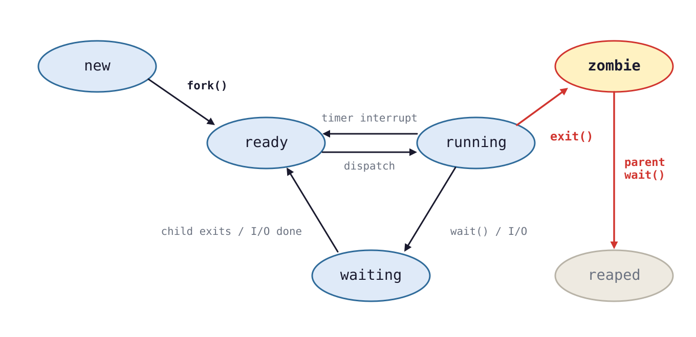</p> --- recall → <scb>enum procstate { UNUSED, USED, SLEEPING, RUNNABLE, RUNNING, ZOMBIE };</scb> --- ### <scb>exit()</scb> | **zombies** - parents <scb>fork()</scb> children... --- ### <scb>exit()</scb> | **zombies** - parents <scb>fork()</scb> children... - ...can <scb>kill()</scb> them... --- ### <scb>exit()</scb> | **zombies** - parents <scb>fork()</scb> children... - ...can <scb>kill()</scb> them... - children that exit become **zombies**... --- ### <scb>exit()</scb> | **zombies** - parents <scb>fork()</scb> children... - ...can <scb>kill()</scb> them... - children that exit become **zombies**... - ...until the parent <scb>wait()</scb>s to **reap** them --- ### <scb>exit()</scb> | **zombies** - parents <scb>fork()</scb> children... - ...can <scb>kill()</scb> them... - children that exit become **zombies**... - ...until the parent <scb>wait()</scb>s to **reap** them - parent dies first? → children become **orphans** → adopted by <scb>init</scb> _someone had a grim sense of humor_ --- ## <scb>kill()</scb> | **send a signal** --- ### <scb>kill()</scb> | **send a signal** - <scb>kill()</scb> is **badly named** → it just sends a **signal** --- ### <scb>kill()</scb> | **send a signal** - <scb>kill()</scb> is **badly named** → it just sends a **signal** - a **signal** → notification of an **event** - triggers execution in a **handler** function - ...at **any time** (non-deterministic) --- which **stack** does the handler run on? --- ### signals | **user-level interrupts** process runs its normal flow, having registered a handler <p>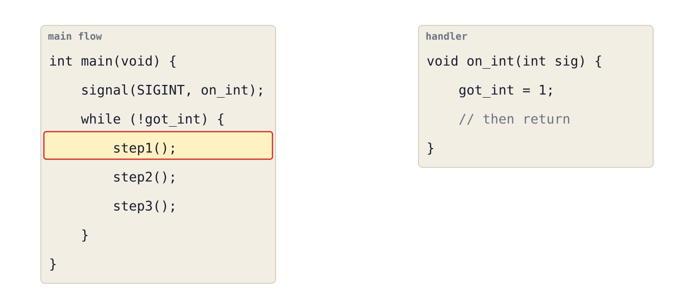</p> --- ### signals | **user-level interrupts** a signal arrives → execution **diverted** into the handler, at **any** point <p>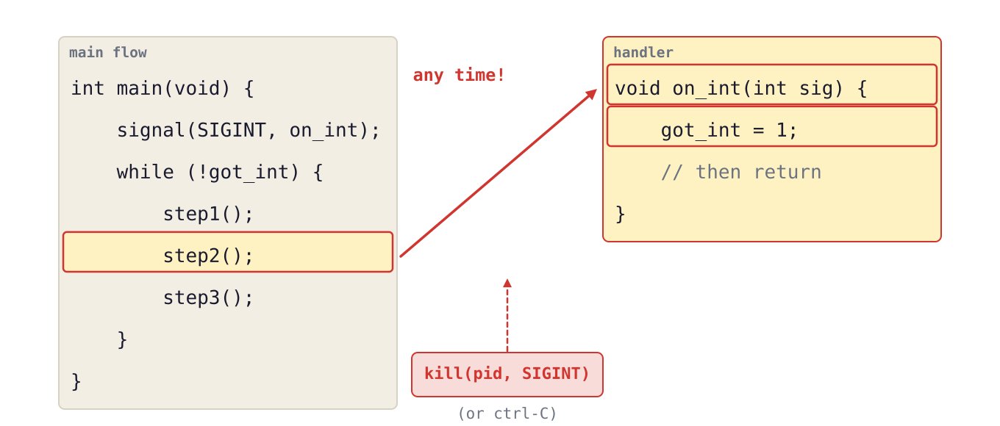</p> --- ### signals | **which stack?** - kernel **saves** the interrupted registers --- ### signals | **which stack?** - kernel **saves** the interrupted registers - builds a **signal frame** on the user stack (or an alternate stack, <scb>sigaltstack</scb>) --- ### signals | **which stack?** - kernel **saves** the interrupted registers - builds a **signal frame** on the user stack (or an alternate stack, <scb>sigaltstack</scb>) - then "returns" into the **handler** Note: - in real code, got_int should be declared volatile sig_atomic_t. --- ### signals | **user-level interrupts** handler returns → process resumes **right where it left off** <p>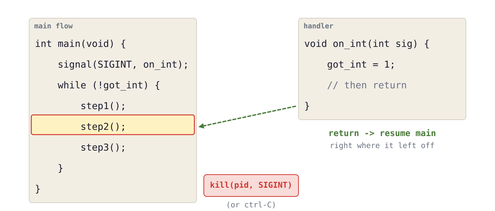</p> --- returning from the handler → <scb>sigreturn</scb> restores the saved registers --- ### signals | **user-level interrupts** - signals = _"user-level interrupts"_ --- ### signals | **user-level interrupts** - signals = _"user-level interrupts"_ - the kernel's hard-to-use mechanism (interrupts)... **exported to user level** --- ### signals | **user-level interrupts** - signals = _"user-level interrupts"_ - the kernel's hard-to-use mechanism (interrupts)... **exported to user level** - e.g. a user-level OS emulator can **fake** timer interrupts → periodic <scb>SIGALRM</scb> --- ### signals | **default behavior** | signal | default | source | |---|---|---| | <scb>SIGCHLD</scb> | ignore | a child exited | --- ### signals | **default behavior** | signal | default | source | |---|---|---| | <scb>SIGCHLD</scb> | ignore | a child exited | | <scb>SIGINT</scb> | terminate | <scb>ctrl-C</scb> | --- ### signals | **default behavior** | signal | default | source | |---|---|---| | <scb>SIGCHLD</scb> | ignore | a child exited | | <scb>SIGINT</scb> | terminate | <scb>ctrl-C</scb> | | <scb>SIGTERM</scb> | terminate | <scb>kill <pid></scb> → a **polite** request | --- ### signals | **default behavior** | signal | default | source | |---|---|---| | <scb>SIGCHLD</scb> | ignore | a child exited | | <scb>SIGINT</scb> | terminate | <scb>ctrl-C</scb> | | <scb>SIGTERM</scb> | terminate | <scb>kill <pid></scb> → a **polite** request | | <scb>SIGKILL</scb> | terminate | <scb>kill -9 <pid></scb> → **cannot** be caught | || or define your **own** handler (except for <scb>SIGKILL</scb>) --- ### signals | **etiquette** - **polite** first → <scb>SIGTERM</scb> → process can clean up --- ### signals | **etiquette** - **polite** first → <scb>SIGTERM</scb> → process can clean up - doesn't exit? → follow up with <scb>SIGKILL</scb> --- ### signals | **etiquette** - **polite** first → <scb>SIGTERM</scb> → process can clean up - doesn't exit? → follow up with <scb>SIGKILL</scb> - signals can go to any **descendant** (subject to permissions) --- ## process API | **summary** --- ### process API | **summary** go from a single <scb>init</scb> process → up to a **full system** --- ### process API | **summary** - go from a single <scb>init</scb> → up to a **full system** --- ### process API | **summary** - go from a single <scb>init</scb> → up to a **full system** - **coordinate** between processes - <scb>fork</scb>, <scb>wait</scb>, signals - the **shell** → e.g. xv6's <scb>sh.c</scb> - <scb>x11</scb> (GUI) → a **visual** shell (double-click = fork + exec) --- ### process API | **summary** - go from a single <scb>init</scb> → up to a **full system** - **coordinate** between processes - <scb>fork</scb>, <scb>wait</scb>, signals - the **shell** → e.g. xv6's <scb>sh.c</scb> - <scb>x11</scb> (GUI) → a **visual** shell (double-click = fork + exec) - process **management** - clean up failed processes → reap zombies, **restart** a crashed server (like <scb>init</scb>!) - define coordination patterns <br> **next class** → communication between processes (IPC)